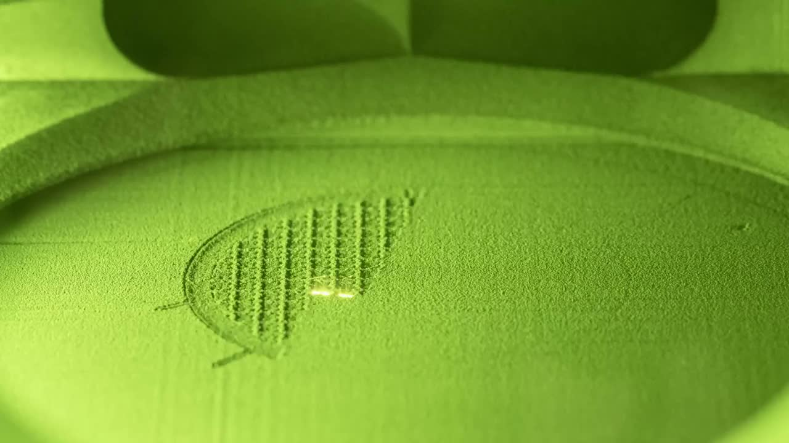

Eight sources: seven peer-reviewed papers published 2024 to 2026, plus one recorded interview.
De Moraes, M. J. B., Nagata, E. Y., Duran, A. J. F. P., & Rossignolo, J. A. (2024). Alkali activated materials applied in 3D printing construction: A review. Heliyon, 10(5), 1–30.
https://doi.org/10.1016/j.heliyon.2024.e26696 Cited in ConstructionDong, C., Petrovic, M., & Davies, I. J. (2024). Applications of 3D printing in medicine: A review. Annals of 3D Printed Medicine, 14(1), 1–17.
https://doi.org/10.1016/j.stlm.2024.100149 Cited in MedicalMa, T., Zhang, Y., Ruan, K., Guo, H., He, M., Shi, X., Guo, Y., Kong, J., & Gu, J. (2024). Advances in 3D printing for polymer composites: A review. InfoMat, 6(6), 1–30.
https://doi.org/10.1002/inf2.12568 Cited in ManufacturingManley, S. [Veritasium]. (2021, Aug 12). The Genius of 3D Printed Rockets [Video]. YouTube.
https://youtu.be/kz165f1g8-E Cited in ManufacturingMasanet, S., Jutand, M. A., Margue, G., Hoarau, H., & Bernhard, J. C. (2025). Using 3D-printing technology for patient education: a review of the literature. 3D Printing in Medicine, 11(1), 1–22.
https://doi.org/10.1186/s41205-025-00296-5 Cited in MedicalSachdeo, R. A., Khanwelkar, C., & Shete, A. (2024). 3D Printing in Wound Healing: Innovations, Applications, and Future Directions. Cureus, 16(12), 1–12.
https://doi.org/10.7759/cureus.75331 Cited in MedicalSkoury, L., Asaf, O., Sprecher, A., Menges, A., & Wortmann, T. (2026). Data-informed Digital Twin for large-scale 3D printing in construction. Automation in Construction, 182(1), 1–21.
https://doi.org/10.1016/j.autcon.2025.106706 Cited in ConstructionTarhan, Y., Tarhan, I. H., & Sahin, R. (2025). Comprehensive Review of Binder Matrices in 3D Printing Construction: Rheological Perspectives. Buildings, 15(1), 1–50.
https://doi.org/10.3390/buildings15010075 Cited in ConstructionEvery photograph and the hero film are documentary records of real additive manufacturing, reproduced under a free licence.
Hero film. Time-lapse of NASA printing the GRX-810 alloy by laser powder-bed fusion at the Powder Processing Lab. Trimmed to the printing sequence.
NASA, public domainMedical. Printed liver model with portal vein, hepatic vessels and tumour mapped for surgical planning.
Wikimedia Commons, CC BY-SA 4.0Construction. TECLA, clay housing printed on site.
WASP and Mario Cucinella Architects, CC BY 2.5Printer arm. A gantry-arm concrete printer laying down a wall in continuous beads.
Misanthropic One, CC BY 2.0Printed house. 3D-Druck-Haus, a finished printed concrete house in Wallenhausen, Germany.
Looniverse, CC BY-SA 4.0Manufacturing. Rotating detonation rocket engine, 251-second full-scale hot fire, autumn 2023.
NASA Marshall Space Flight Center, public domainInfographic. Key figures from the three sectors, drawn together.
Thusal Ranawaka, made with CanvaEngine film. Rotating detonation rocket engine hot fire, 27 September 2023, trimmed to the burn.
NASA, public domain3D model. The ratcheting wrench transmitted to the International Space Station and printed in orbit, December 2014. Converted from NASA's STL print file to glTF.
NASA, public domainPowder-bed stills. Metal tensile specimens in the powder bed, and the same build through the laser-safety window.
FZU, CC BY-SA 4.0Bioprinter. Laboratory bioprinter depositing living cells layer by layer.
Organovo, public domain